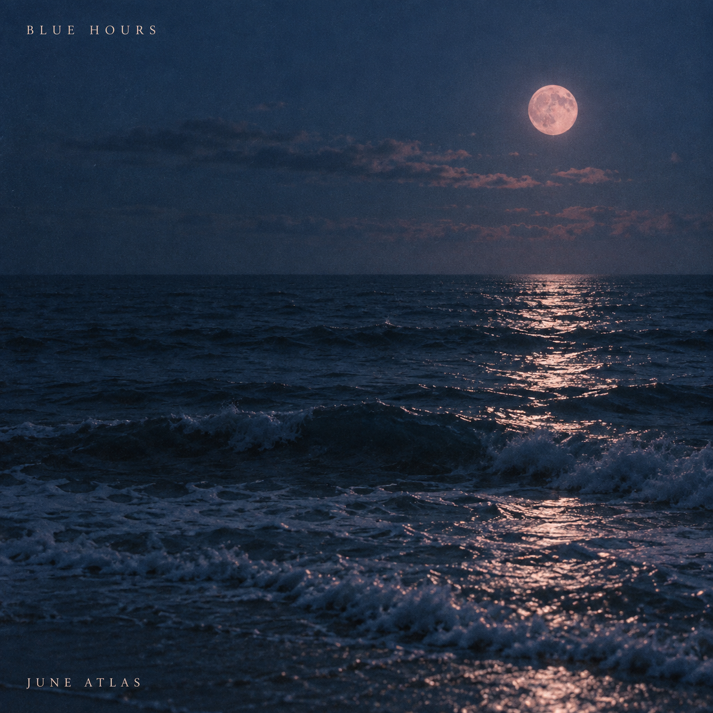

Book club for albumsMusic first.
Music first.
Friends close.
Open your group, see what needs you, and get back to listening.
01
The album leads
Artwork and an external listening link stay visible.
02
One clear next step
Pick, review, wait, or read what friends thought.
03
Personality with room to breathe
Geist, colorful stickers, and quieter surfaces.
Design review deliverable · September 2026
Existing game rules and backend remain the baseline.

A pick worth sharing
maniaResume
mania.Sunday Records ▾•••
Round 2 of 4
Listen and review
Blue Hours
June Atlas
Listen ↗
Opens Spotify in a new tab
1 of 3 reviews submitted
8.4 − +
The quiet opening won me over. I kept coming back to the last track.
Hidden from friends until the round ends.
Submit review